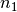
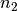
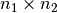
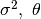
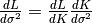
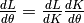
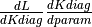
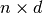
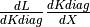

Creating new kernels¶
We will see in this tutorial how to create new kernels in GPy. We will also give details on how to implement each function of the kernel and illustrate with a running example: the rational quadratic kernel.
Structure of a kernel in GPy¶
In GPy a kernel object is made of a list of kernpart objects, which correspond to symetric positive definite functions. More precisely, the kernel should be understood as the sum of the kernparts. In order to implement a new covariance, the following steps must be followed
- implement the new covariance as a kernpart object
- update the constructors that allow to use the kernpart as a kern object
- update the __init__.py file
Theses three steps are detailed below.
Implementing a kernpart object¶
We advise the reader to start with copy-pasting an existing kernel and to modify the new file. We will now give a description of the various functions that can be found in a kernpart object.
Header
The header is similar to all kernels:
from kernpart import kernpart
import numpy as np
class rational_quadratic(kernpart):
__init__(self,input_dim, param1, param2, ...)
The implementation of this function in mandatory.
For all kernparts the first parameter input_dim corresponds to the dimension of the input space, and the following parameters stand for the parameterization of the kernel.
You have to call super(<class_name>, self).__init__(input_dim,
name) to make sure the input dimension and name of the kernel are
stored in the right place. These attributes are available as
self.input_dim and self.name at runtime.
.. The following attributes are compulsory: self.input_dim (the dimension, integer), self.name (name of the kernel, string), self.num_params (number of parameters, integer). ::
Parameterization is done by adding
:py:class:GPy.core.parameter.Param objects to self and use
them as normal numpy array-like``s in yout code. The parameters have
to be added by calling
:py:function:``GPy.core.parameterized:Parameterized.add_parameters
with the :py:class:GPy.core.parameter.Param objects as arguments.
- def __init__(self,input_dim,variance=1.,lengthscale=1.,power=1.):
- super(RationalQuadratic, self).__init__(input_dim, ‘rat_quad’) assert input_dim == 1, “For this kernel we assume input_dim=1” self.variance = Param(‘variance’, variance) self.lengthscale = Param(‘lengtscale’, lengthscale) self.power = Param(‘power’, power) self.add_parameters(self.variance, self.lengthscale, self.power)
From now on you can use the parameters self.variance,
self.lengthscale, self.power as normal numpy ``array-like``s in your
code. Updates from the optimization routine will be done
automatically.
parameters_changed(self)
The implementation of this function is optional.
This functions deals as a callback for each optimization iteration. If
one optimization step was successfull and the parameters (added by
:py:function:GPy.core.parameterized:Parameterized.add_parameters)
this callback function will be called to be able to update any
precomputations for the kernel.
- def parameters_changed(self):
- # nothing todo here
K(self,X,X2,target)
The implementation of this function in mandatory.
This function is used to compute the covariance matrix associated with the inputs X, X2 (np.arrays with arbitrary number of line (say , ) and self.input_dim columns). This function does not returns anything but it adds the  covariance matrix to the kernpart to the object target (a np.array). This trick allows to compute the covariance matrix of a kernel containing many kernparts with a limited memory use.
def K(self,X,X2,target):
if X2 is None: X2 = X
dist2 = np.square((X-X2.T)/self.lengthscale)
target += self.variance*(1 + dist2/2.)**(-self.power)
Kdiag(self,X,target)
The implementation of this function in mandatory.
This function is similar to K but it computes only the values of the kernel on the diagonal. Thus, target is a 1-dimensional np.array of length .
def Kdiag(self,X,target):
target += self.variance
dK_dtheta(self,dL_dK,X,X2,target)
This function is required for the optimization of the parameters.
Computes the derivative of the likelihood. As previously, the values are added to the object target which is a 1-dimensional np.array of length self.input_dim. For example, if the kernel is parameterized by , then  is added to the first element of target and  to the second.
def dK_dtheta(self,dL_dK,X,X2,target):
if X2 is None: X2 = X
dist2 = np.square((X-X2.T)/self.lengthscale)
dvar = (1 + dist2/2.)**(-self.power)
dl = self.power * self.variance * dist2 * self.lengthscale**(-3) * (1 + dist2/2./self.power)**(-self.power-1)
dp = - self.variance * np.log(1 + dist2/2.) * (1 + dist2/2.)**(-self.power)
target[0] += np.sum(dvar*dL_dK)
target[1] += np.sum(dl*dL_dK)
target[2] += np.sum(dp*dL_dK)
dKdiag_dtheta(self,dL_dKdiag,X,target)
This function is required for BGPLVM, sparse models and uncertain inputs.
As previously, target is an self.num_params array and  is added to each element.
def dKdiag_dtheta(self,dL_dKdiag,X,target):
target[0] += np.sum(dL_dKdiag)
# here self.lengthscale and self.power have no influence on Kdiag so target[1:] are unchanged
dK_dX(self,dL_dK,X,X2,target)
This function is required for GPLVM, BGPLVM, sparse models and uncertain inputs.
Computes the derivative of the likelihood with respect to the inputs X (a  np.array). The result is added to target which is a np.array.
def dK_dX(self,dL_dK,X,X2,target):
"""derivative of the covariance matrix with respect to X."""
if X2 is None: X2 = X
dist2 = np.square((X-X2.T)/self.lengthscale)
dX = -self.variance*self.power * (X-X2.T)/self.lengthscale**2 * (1 + dist2/2./self.lengthscale)**(-self.power-1)
target += np.sum(dL_dK*dX,1)[:,np.newaxis]
dKdiag_dX(self,dL_dKdiag,X,target)
This function is required for BGPLVM, sparse models and uncertain inputs. As for dKdiag_dtheta,  is added to each element of target.
def dKdiag_dX(self,dL_dKdiag,X,target):
pass
Psi statistics
The psi statistics and their derivatives are required for BGPLVM and GPS with uncertain inputs.
The expressions of the psi statistics are:
TODO
For the rational quadratic we have:
TODO
Update the constructor¶
Once the required functions have been implemented as a kernpart object, the file GPy/kern/constructors.py has to be updated to allow to build a kernel based on the kernpart object.
The following line should be added in the preamble of the file:
from rational_quadratic import rational_quadratic as rational_quadratic_part
as well as the following block
def rational_quadratic(input_dim,variance=1., lengthscale=1., power=1.):
part = rational_quadraticpart(input_dim,variance, lengthscale, power)
return kern(input_dim, [part])
Update initialization¶
The last step is to update the list of kernels imported from constructor in GPy/kern/__init__.py.